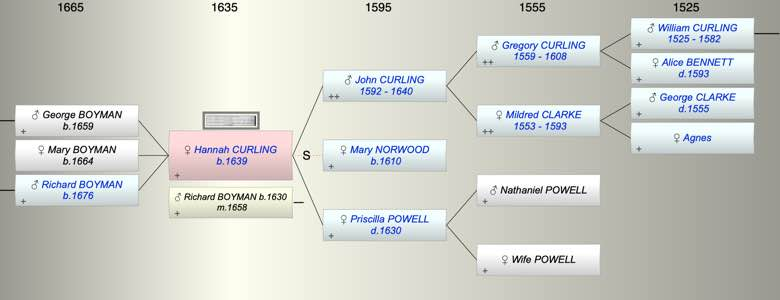
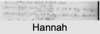

| [Index] |
| Hannah CURLING (1639 - ) |
|  |
|  |
| b. 1639 |
| m. 10 Nov 1658 Richard BOYMAN (1630 - ) at Canterbury Cathedral |
| Parents: |
| John CURLING (1592 - 1640) |
| Priscilla POWELL ( - 1630) |
| Children (3): |
| George BOYMAN (1659 - ) |
| Mary BOYMAN (1664 - ) |
| Richard BOYMAN (1676 - ) |
| Grandchildren (7): |
| Elizabeth BOYMAN (1697 - ), Richard BOYMAN (1700 - ), Richard BOYMAN (1703 - ), Stephen BOYMAN (1705 - 1753), Joshua BOYMAN (1712 - 1712), Sarah BOYMAN (1713 - 1716), Hannah BOYMAN (1718 - ) |
| Events in Hannah CURLING (1639 - )'s life | |||||
| Date | Age | Event | Place | Notes | Src |
| 1630 | Death of mother Priscilla POWELL | Note 1 | |||
| 1639 | Hannah CURLING was born | Note 2 | |||
| 1640 | 1 | Death of father John CURLING (aged 48) | Note 3 | ||
| 10 Nov 1658 | 19 | Married Richard BOYMAN (aged 28) | Canterbury Cathedral | Note 4 | |
| 1659 | 20 | Birth of son George BOYMAN | St Peter, Thanet | ||
| 1664 | 25 | Birth of daughter Mary BOYMAN | St Peter, Thanet | Note 5 | |
| 1676 | 37 | Birth of son Richard BOYMAN | St Peter, Thanet | Note 6 | |
| Created on a Mac™ using iFamily for Mac™ on 8 Oct 2023 |